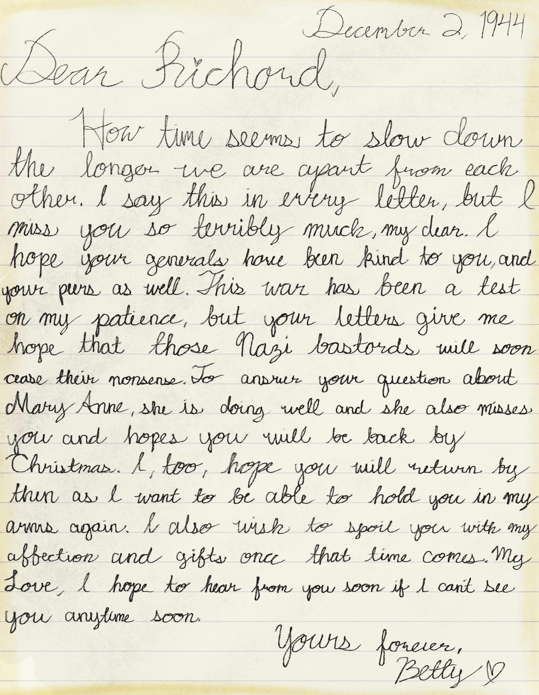
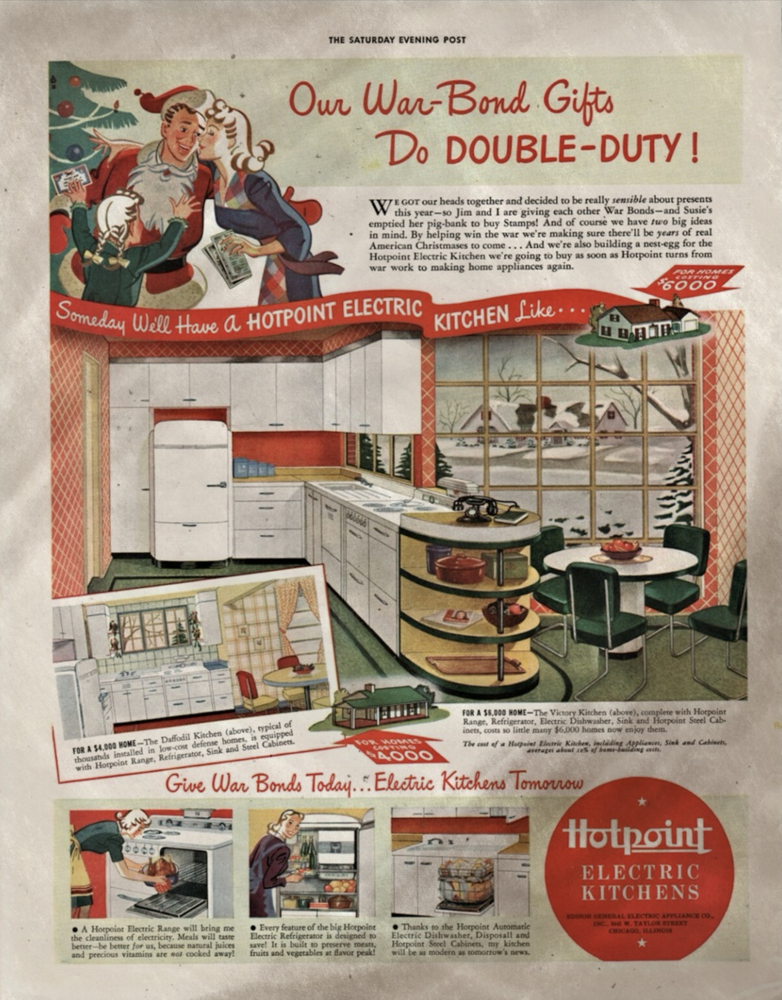

Transcription
December 2, 1944
Dear Richard,
How time seems to slow down the longer we are apart from each other. I say this in every letter, but I miss you so terribly much, my dear. I hope your generals have been kind to you and your peers as well. This war has been a test on my patience, but your letters give me hope that these Nazi bastards will soon cease their nonsense. To answer, your question about Mary Anne, she is doing well and she also misses you and hopes you will be back by Christmas. I, too, hope you will return then as I want to be able to hold you in my arms again. I also wish to spoil you with my affection and gifts once that time comes. My Love, I hope to hear from you soon if I can't see you anytime soon.
Yours forever,
Betty
Gallery

Description
Christmas advertisement about electric kitchen appliances by Hotpoint found folded in between the letter.
Back to Home - Next Letter